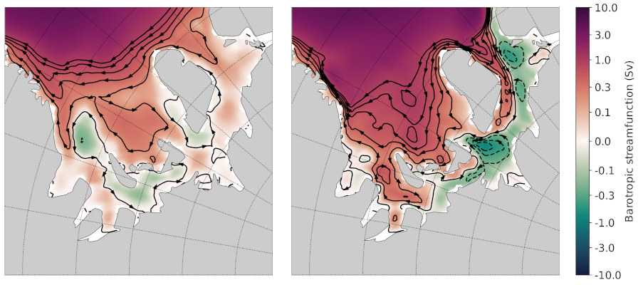

Developers: Adding a new analysis task
This tutorial walks a new developer through the basics of creating a new analysis task in MPAS-Analysis. It is a common practice to find an existing analysis task that is as close as possible to the new analysis, and to copy that existing task as a template for the new task. That is the strategy we will demonstrate here.
To provide a real example, we will show how we copy and modify an analysis
task used to compute the anomaly in ocean heat content
(ClimatologyMapOHCAnomaly) to instead compute
the barotropic streamfunction (BSF).
For computing the BSF itself, we will make use of a script that was developed outside of MPAS-Analysis for this purpose. This is also a common development technique: first develop the analysis as a script or jupyter notebook. Nearly always, the scripts or notebooks include hard-coded paths and are otherwise not easily applied to new simulations without considerable effort. This is the motivation for adapting the code to MPAS-Analysis.
1. Getting started
To begin, please follow the Developer: Getting Started tutorial, which will help you through the basics of creating a fork of MPAS-Analysis, cloning it onto the machine(s) where you will do your development, making a worktree for the feature you will develop, creating a conda environment for testing your new MPAS-Analysis development, and running MPAS-Analysis.
Then, please follow the Developers: Understanding an analysis task. This will give
you a tour of the ClimatologyMapOHCAnomaly
analysis task that we will use as a starting point for developing a new task.
2. The reference scripts
I have two scripts I used in the past to compute the barotropic streamfunction and write it out, and then to plot it. These scripts yanked out some code from MPAS-Analysis so there are a few similarities but there’s a lot of work to do.
Here’s the script for computing the BSF:
#!/usr/bin/env python
import xarray
import numpy
import scipy.sparse
import scipy.sparse.linalg
import sys
from mpas_tools.io import write_netcdf
def main():
ds = xarray.open_dataset(sys.argv[1])
ds = ds[['timeMonthly_avg_layerThickness',
'timeMonthly_avg_normalVelocity']]
ds.load()
dsMesh = xarray.open_dataset(sys.argv[2])
dsMesh = dsMesh[['cellsOnEdge', 'cellsOnVertex', 'nEdgesOnCell',
'edgesOnCell', 'verticesOnCell', 'verticesOnEdge',
'dcEdge', 'dvEdge', 'lonCell', 'latCell', 'lonVertex',
'latVertex']]
dsMesh.load()
out_filename = sys.argv[3]
bsfVertex = _compute_barotropic_streamfunction_vertex(dsMesh, ds)
print('bsf on vertices computed.')
bsfCell = _compute_barotropic_streamfunction_cell(dsMesh, bsfVertex)
print('bsf on cells computed.')
dsBSF = xarray.Dataset()
dsBSF['bsfVertex'] = bsfVertex
dsBSF.bsfVertex.attrs['units'] = 'Sv'
dsBSF.bsfVertex.attrs['description'] = 'barotropic streamfunction ' \
'on vertices'
dsBSF['bsfCell'] = bsfCell
dsBSF.bsfCell.attrs['units'] = 'Sv'
dsBSF.bsfCell.attrs['description'] = 'barotropic streamfunction ' \
'on cells'
dsBSF = dsBSF.transpose('Time', 'nCells', 'nVertices')
for var in dsMesh:
dsBSF[var] = dsMesh[var]
write_netcdf(dsBSF, out_filename)
def _compute_transport(dsMesh, ds):
cellsOnEdge = dsMesh.cellsOnEdge - 1
innerEdges = numpy.logical_and(cellsOnEdge.isel(TWO=0) >= 0,
cellsOnEdge.isel(TWO=1) >= 0)
# convert from boolean mask to indices
innerEdges = numpy.flatnonzero(innerEdges.values)
cell0 = cellsOnEdge.isel(nEdges=innerEdges, TWO=0)
cell1 = cellsOnEdge.isel(nEdges=innerEdges, TWO=1)
layerThickness = ds.timeMonthly_avg_layerThickness
normalVelocity = ds.timeMonthly_avg_normalVelocity.isel(nEdges=innerEdges)
layerThicknessEdge = 0.5*(layerThickness.isel(nCells=cell0) +
layerThickness.isel(nCells=cell1))
transport = dsMesh.dvEdge[innerEdges] * \
(layerThicknessEdge * normalVelocity).sum(dim='nVertLevels')
# ds = xarray.Dataset()
# ds['transport'] = transport
# ds['innerEdges'] = ('nEdges', innerEdges)
# write_netcdf(ds, 'transport.nc')
return innerEdges, transport
def _compute_barotropic_streamfunction_vertex(dsMesh, ds):
innerEdges, transport = _compute_transport(dsMesh, ds)
print('transport computed.')
nVertices = dsMesh.sizes['nVertices']
nTime = ds.sizes['Time']
cellsOnVertex = dsMesh.cellsOnVertex - 1
verticesOnEdge = dsMesh.verticesOnEdge - 1
isBoundaryCOV = cellsOnVertex == -1
boundaryVertices = numpy.logical_or(isBoundaryCOV.isel(vertexDegree=0),
isBoundaryCOV.isel(vertexDegree=1))
boundaryVertices = numpy.logical_or(boundaryVertices,
isBoundaryCOV.isel(vertexDegree=2))
# convert from boolean mask to indices
boundaryVertices = numpy.flatnonzero(boundaryVertices.values)
nBoundaryVertices = len(boundaryVertices)
nInnerEdges = len(innerEdges)
indices = numpy.zeros((2, 2*nInnerEdges+nBoundaryVertices), dtype=int)
data = numpy.zeros(2*nInnerEdges+nBoundaryVertices, dtype=float)
# The difference between the streamfunction at vertices on an inner edge
# should be equal to the transport
v0 = verticesOnEdge.isel(nEdges=innerEdges, TWO=0).values
v1 = verticesOnEdge.isel(nEdges=innerEdges, TWO=1).values
ind = numpy.arange(nInnerEdges)
indices[0, 2*ind] = ind
indices[1, 2*ind] = v1
data[2*ind] = 1.
indices[0, 2*ind+1] = ind
indices[1, 2*ind+1] = v0
data[2*ind+1] = -1.
# the streamfunction should be zero at all boundary vertices
ind = numpy.arange(nBoundaryVertices)
indices[0, 2*nInnerEdges + ind] = nInnerEdges + ind
indices[1, 2*nInnerEdges + ind] = boundaryVertices
data[2*nInnerEdges + ind] = 1.
bsfVertex = xarray.DataArray(numpy.zeros((nTime, nVertices)),
dims=('Time', 'nVertices'))
for tIndex in range(nTime):
rhs = numpy.zeros(nInnerEdges+nBoundaryVertices, dtype=float)
# convert to Sv
ind = numpy.arange(nInnerEdges)
rhs[ind] = 1e-6*transport.isel(Time=tIndex)
ind = numpy.arange(nBoundaryVertices)
rhs[nInnerEdges + ind] = 0.
M = scipy.sparse.csr_matrix((data, indices),
shape=(nInnerEdges+nBoundaryVertices,
nVertices))
solution = scipy.sparse.linalg.lsqr(M, rhs)
bsfVertex[tIndex, :] = -solution[0]
return bsfVertex
def _compute_barotropic_streamfunction_cell(dsMesh, bsfVertex):
'''
Interpolate the barotropic streamfunction from vertices to cells
'''
nEdgesOnCell = dsMesh.nEdgesOnCell
edgesOnCell = dsMesh.edgesOnCell - 1
verticesOnCell = dsMesh.verticesOnCell - 1
areaEdge = 0.25*dsMesh.dcEdge*dsMesh.dvEdge
nCells = dsMesh.sizes['nCells']
maxEdges = dsMesh.sizes['maxEdges']
areaVert = xarray.DataArray(numpy.zeros((nCells, maxEdges)),
dims=('nCells', 'maxEdges'))
for iVert in range(maxEdges):
edgeIndices = edgesOnCell.isel(maxEdges=iVert)
mask = iVert < nEdgesOnCell
areaVert[:, iVert] += 0.5*mask*areaEdge.isel(nEdges=edgeIndices)
for iVert in range(maxEdges-1):
edgeIndices = edgesOnCell.isel(maxEdges=iVert+1)
mask = iVert+1 < nEdgesOnCell
areaVert[:, iVert] += 0.5*mask*areaEdge.isel(nEdges=edgeIndices)
edgeIndices = edgesOnCell.isel(maxEdges=0)
mask = nEdgesOnCell == maxEdges
areaVert[:, maxEdges-1] += 0.5*mask*areaEdge.isel(nEdges=edgeIndices)
bsfCell = ((areaVert * bsfVertex[:, verticesOnCell]).sum(dim='maxEdges') /
areaVert.sum(dim='maxEdges'))
return bsfCell
if __name__ == '__main__':
main()
And here’s the one for plotting it:
#!/usr/bin/env python
import xarray
import numpy
import matplotlib
import matplotlib.pyplot as plt
import matplotlib.ticker as mticker
import matplotlib.colors as cols
from mpl_toolkits.axes_grid1 import make_axes_locatable
import matplotlib.patches as mpatches
import cmocean
import cartopy
import pyproj
import os
from pyremap import ProjectionGridDescriptor
def get_antarctic_stereographic_projection(): # {{{
"""
Get a projection for an Antarctic steregraphic comparison grid
Returns
-------
projection : ``pyproj.Proj`` object
The projection
"""
# Authors
# -------
# Xylar Asay-Davis
projection = pyproj.Proj('+proj=stere +lat_ts=-71.0 +lat_0=-90 +lon_0=0.0 '
'+k_0=1.0 +x_0=0.0 +y_0=0.0 +ellps=WGS84')
return projection # }}}
def get_fris_stereographic_comparison_descriptor(): # {{{
"""
Get a descriptor of a region of a polar stereographic grid centered on the
Filchner-Ronne Ice Shelf, used for remapping and determining the grid name
Returns
-------
descriptor : ``ProjectionGridDescriptor`` object
A descriptor of the FRIS comparison grid
"""
# Authors
# -------
# Xylar Asay-Davis
x = numpy.linspace(-1.6e6, -0.5e6, 1101)
y = numpy.linspace(0., 1.1e6, 1101)
Lx = 1e-3*(x[-1] - x[0])
Ly = 1e-3*(y[-1] - y[0])
dx = 1e-3*(x[1] - x[0])
projection = get_antarctic_stereographic_projection()
meshName = '{}x{}km_{}km_FRIS_stereo'.format(Lx, Ly, dx)
descriptor = ProjectionGridDescriptor.create(projection, x, y, meshName)
return descriptor # }}}
def add_land_lakes_coastline(ax):
land_50m = cartopy.feature.NaturalEarthFeature(
'physical', 'land', '50m', edgecolor='k',
facecolor='#cccccc', linewidth=0.5)
lakes_50m = cartopy.feature.NaturalEarthFeature(
'physical', 'lakes', '50m', edgecolor='k',
facecolor='white',
linewidth=0.5)
ax.add_feature(land_50m, zorder=2)
ax.add_feature(lakes_50m, zorder=4)
def add_arrow_to_line2D(ax, path, arrow_spacing=100e3,):
"""
https://stackoverflow.com/a/27637925/7728169
Add arrows to a matplotlib.lines.Line2D at selected locations.
Parameters:
-----------
axes:
line: list of 1 Line2D object as returned by plot command
arrow_spacing: distance in m between arrows
Returns:
--------
arrows: list of arrows
"""
v = path.vertices
x = v[:, 0]
y = v[:, 1]
arrows = []
s = numpy.cumsum(numpy.sqrt(numpy.diff(x) ** 2 + numpy.diff(y) ** 2))
indices = numpy.searchsorted(s, arrow_spacing*numpy.arange(1,
int(s[-1]/arrow_spacing)))
for n in indices:
dx = numpy.mean(x[n-2:n]) - x[n]
dy = numpy.mean(y[n-2:n]) - y[n]
p = mpatches.FancyArrow(
x[n], y[n], dx, dy, length_includes_head=False, width=4e3,
facecolor='k')
ax.add_patch(p)
arrows.append(p)
return arrows
def savefig(filename, tight=True, pad_inches=0.1, plot_pdf=True):
"""
Saves the current plot to a file, then closes it.
Parameters
----------
filename : str
the file name to be written
config : mpas_analysis.configuration.MpasAnalysisConfigParser
Configuration options
tight : bool, optional
whether to tightly crop the figure
pad_inches : float, optional
The boarder around the image
"""
# Authors
# -------
# Xylar Asay-Davis
if tight:
bbox_inches = 'tight'
else:
bbox_inches = None
filenames = [filename]
if plot_pdf:
pdf_filename = '{}.pdf'.format(os.path.splitext(filename)[0])
filenames.append(pdf_filename)
for path in filenames:
plt.savefig(path, dpi='figure', bbox_inches=bbox_inches,
pad_inches=pad_inches)
plt.close()
descriptor = get_fris_stereographic_comparison_descriptor()
projection = cartopy.crs.Stereographic(
central_latitude=-90., central_longitude=0.0,
true_scale_latitude=-71.0)
matplotlib.rc('font', size=14)
x = descriptor.xCorner
y = descriptor.yCorner
extent = [x[0], x[-1], y[0], y[-1]]
dx = x[1] - x[0]
dy = y[1] - y[0]
fig = plt.figure(figsize=[15, 7.5], dpi=200)
titles = ['control (yrs 51-60)', 'control (yrs 111-120)']
for index, yrs in enumerate(['0051-0060', '0111-0120']):
filename = 'control/bsf_{}_1100.0x1100.0km_1.0km_' \
'FRIS_stereo_patch.nc'.format(yrs)
with xarray.open_dataset(filename) as ds:
ds = ds.isel(Time=0)
bsf = ds.bsfVertex
bsf = bsf.where(bsf != 0.).values
#u = 1e6*(bsf[2:, 1:-1] - bsf[:-2, 1:-1])/dy
#v = -1e6*(bsf[1:-1, 2:] - bsf[1:-1, :-2])/dx
#x = 0.5*(x[1:-2] + x[2:-1])
#y = 0.5*(y[1:-2] + y[2:-1])
xc = 0.5*(x[0:-1] + x[1:])
yc = 0.5*(y[0:-1] + y[1:])
ax = fig.add_subplot(121+index, projection=projection)
ax.set_title(titles[index], y=1.06, size=16)
ax.set_extent(extent, crs=projection)
gl = ax.gridlines(crs=cartopy.crs.PlateCarree(), color='k',
linestyle=':', zorder=5, draw_labels=False)
gl.xlocator = mticker.FixedLocator(numpy.arange(-180., 181., 10.))
gl.ylocator = mticker.FixedLocator(numpy.arange(-88., 81., 2.))
gl.n_steps = 100
gl.rotate_labels = False
gl.x_inline = False
gl.y_inline = False
gl.xformatter = cartopy.mpl.gridliner.LONGITUDE_FORMATTER
gl.yformatter = cartopy.mpl.gridliner.LATITUDE_FORMATTER
gl.left_labels = False
gl.right_labels = False
add_land_lakes_coastline(ax)
norm = cols.SymLogNorm(linthresh=0.1, linscale=0.5, vmin=-10., vmax=10.)
ticks = [-10., -3., -1., -0.3, -0.1, 0., 0.1, 0.3, 1., 3., 10.]
levels = numpy.linspace(-1., 1., 11)
handle = plt.pcolormesh(x, y, bsf, norm=norm, cmap='cmo.curl',
rasterized=True)
cs = plt.contour(xc, yc, bsf, levels=levels, colors='k')
for collection in cs.collections:
for path in collection.get_paths():
add_arrow_to_line2D(ax, path)
divider = make_axes_locatable(ax)
cax = divider.append_axes("right", size="5%", pad=0.1,
axes_class=plt.Axes)
if index < 1:
cax.set_axis_off()
else:
cbar = plt.colorbar(handle, cax=cax)
cbar.set_label('Barotropic streamfunction (Sv)')
cbar.set_ticks(ticks)
cbar.set_ticklabels(['{}'.format(tick) for tick in ticks])
Here’s a plot that I think was produced with this code (but I’m not 100% sure).
{kind=link}
3. Selecting an existing task to copy
I selected ClimatologyMapOHCAnomaly as the
analysis task that was closest to what I envision for a new
ClimatologyMapBSF task. Here were my thoughts:
Both OHC and BSF plot 2D fields (as opposed to some of the analysis like WOA, Argo and SOSE that work with 3D temperature, salinity and sometimes other fields).
Neither OHC nor BSF have observations to compare with.
Both OHC and BSF require computing a new field, rather than directly using output from MPAS-Ocean.
On the other hand, there are some major differences between the 2 that will mean my job isn’t a simple substitution:
While OHC is computed over different depth ranges, we do not want that for the BSF analysis.
We will eventually want some “fancier” plotting for the BSF that draws streamlines with arrows. That’s not currently available in any MPAS-Analysis tasks.
OHC involves computing an anomaly, but that isn’t anything we need for BSF.
Even so, ClimatologyMapOHCAnomaly seems like
a reasonable starting point.
4. Developing the task
I’ll start just by making a new worktree, then copying the “template” analysis task to the new name:
git worktree add ../add_climatology_map_bsf
cd ../add_climatology_map_bsf
cp mpas_analysis/ocean/climatology_map_ohc_anomaly.py mpas_analysis/ocean/climatology_map_bsf.py
Then, I’ll open this new worktree in PyCharm. (You can, of course, use whatever editor you like.)
pycharm-community .
I’ll create or recreate my mpas_dev environment as in
Developer: Getting Started, and then make sure to at least do:
conda activate mpas_dev
python -m pip install --no-deps --no-build-isolation -e .
4.1 ClimatologyMapBSF class
In the editor, I rename the class from ClimatologyMapOHCAnomaly to
ClimatologyMapBSF and task name from climatologyMapOHCAnomaly to
climatologyMapBSF.
Then, I update the docstring right away because otherwise I’ll forget!
class ClimatologyMapBSF(AnalysisTask):
"""
An analysis task for computing and plotting maps of the barotropic
streamfunction (BSF)
Attributes
----------
mpas_climatology_task : mpas_analysis.shared.climatology.MpasClimatologyTask
The task that produced the climatology to be remapped and plotted
"""
I keep the mpas_climatology_task attribute because I’m going to need a
climatology of the velocity field and layer thicknesses that I will get from
that task, but I know I won’t need the ref_year_climatology_task attribute
so I get rid of it.
4.2 Constructor
Then, I move on to the constructor. The main things I need to do besides renaming the task are:
rename the field I’m processing to
barotropicStreamfunction.clean up the
tagsa little bit (changeanomalytostreamfunction).get rid of
ref_year_climatology_tasksince I’m not computing anomalies.get rid of
depth_rangebecause I’m using only the full ocean column.
def __init__(self, config, mpas_climatology_task, control_config=None):
"""
Construct the analysis task.
Parameters
----------
config : mpas_tools.config.MpasConfigParser
Configuration options
mpas_climatology_task : mpas_analysis.shared.climatology.MpasClimatologyTask
The task that produced the climatology to be remapped and plotted
control_config : mpas_tools.config.MpasConfigParser, optional
Configuration options for a control run (if any)
"""
field_name = 'barotropicStreamfunction'
# call the constructor from the base class (AnalysisTask)
super().__init__(config=config, taskName='climatologyMapBSF',
componentName='ocean',
tags=['climatology', 'horizontalMap', field_name,
'publicObs', 'streamfunction'])
self.mpas_climatology_task = mpas_climatology_task
section_name = self.taskName
# read in what seasons we want to plot
seasons = config.getexpression(section_name, 'seasons')
if len(seasons) == 0:
raise ValueError(f'config section {section_name} does not contain '
f'valid list of seasons')
comparison_grid_names = config.getexpression(section_name,
'comparisonGrids')
if len(comparison_grid_names) == 0:
raise ValueError(f'config section {section_name} does not contain '
f'valid list of comparison grids')
Next, I need to update the mpas_field_name (which I can choose since I’m
computing the field here, it’s not something produced by MPAS-Ocean). And then
I need to specify the fields from the timeSeriesStatsMonthlyOutput data
that I will use in the computation:
mpas_field_name = field_name
variable_list = ['timeMonthly_avg_normalVelocity',
'timeMonthly_avg_layerThickness']
In the next block of code, I:
get rid of the for-loop over depth ranges and unindent the code that was in it.
rename
RemapMpasOHCClimatologytoRemapMpasBSFClimatology(we will get to this in section 5)make my best guess about the arguments I do and don’t need for the constructor of
RemapMpasBSFClimatology
remap_climatology_subtask = RemapMpasBSFClimatology(
mpas_climatology_task=mpas_climatology_task,
parent_task=self,
climatology_name=field_name,
variable_list=variable_list,
comparison_grid_names=comparison_grid_names,
seasons=seasons)
self.add_subtask(remap_climatology_subtask)
In the remainder of the constructor, I
update things like the name of the field being plotted and the units
continue to get rid of things related to depth range
out_file_label = field_name
remap_observations_subtask = None
if control_config is None:
ref_title_label = None
ref_field_name = None
diff_title_label = 'Model - Observations'
else:
control_run_name = control_config.get('runs', 'mainRunName')
ref_title_label = f'Control: {control_run_name}'
ref_field_name = mpas_field_name
diff_title_label = 'Main - Control'
for comparison_grid_name in comparison_grid_names:
for season in seasons:
# make a new subtask for this season and comparison grid
subtask_name = f'plot{season}_{comparison_grid_name}'
subtask = PlotClimatologyMapSubtask(
self, season, comparison_grid_name,
remap_climatology_subtask, remap_observations_subtask,
controlConfig=control_config, subtaskName=subtask_name)
subtask.set_plot_info(
outFileLabel=out_file_label,
fieldNameInTitle=f'Barotropic Streamfunction',
mpasFieldName=mpas_field_name,
refFieldName=ref_field_name,
refTitleLabel=ref_title_label,
diffTitleLabel=diff_title_label,
unitsLabel='Sv',
imageCaption='Barotropic Streamfunction',
galleryGroup='Barotropic Streamfunction',
groupSubtitle=None,
groupLink='bsf',
galleryName=None)
self.add_subtask(subtask)
This will result in a “gallery” on the web page called “Barotropic Streamfunction” with a single image in it. That seems a little silly but we’ll change that later if we feel the need.
4.3 setup_and_check() method
In the OHC analysis task, we needed to check if the reference year for the
anomaly and the climatology year were different from one another. We don’t
need this check for the BSF because we’re not computing an anomaly here. So
we can get rid of the setup_and_check() method entirely and the version
from AnalysisTask (the superclass) will be called automatically.
At this point, I commit my changes even though I’m less than halfway done.
git add mpas_analysis/ocean/climatology_map_bsf.py
git commit
I can always do
git commit --amend mpas_analysis/ocean/climatology_map_bsf.py
to keep adding changes to my commit as I go.
5. Developing a subtask
Similarly to how RemapMpasOHCClimatology computes the ocean heat content,
we need a class for computing the barotropic streamfunction before we remap
to the comparison grid. In general, it is important to perform computations
on the native MPAS mesh before remapping to the comparison grid but in the
case of the barotropic streamfunction, this is especially true. Any attempt
to compute this analysis directly on the comparison grid (e.g. using remapped,
reconstructed velocity components) would be woefully inaccurate.
5.1 RemapMpasBSFClimatology class
We start by renaming the class from RemapMpasOHCClimatology to
RemapMpasBSFClimatology, updating the docstring, removing the unneeded
attributes:
class RemapMpasBSFClimatology(RemapMpasClimatologySubtask):
"""
A subtask for computing climatologies of the barotropic streamfunction
from climatologies of normal velocity and layer thickness
"""
3.2 Constructor
I started by taking out all of the unneeded parameters from the constructor.
What I was left with was simply a call to the constructor of the superclass
RemapMpasClimatologySubtask.
In such a case, there is no point in overriding the constructor. We should
simply leave the constructor for the superclass. The main difference is that
I had switched away from mixed capitalization in the
RemapMpasOHCClimatology to conform to the PEP8 style guide. The superclass
still uses mixed case so we will have to change the call in
ClimatologyMapBSF just a little:
remap_climatology_subtask = RemapMpasBSFClimatology(
mpasClimatologyTask=mpas_climatology_task,
parentTask=self,
climatologyName=field_name,
variableList=variable_list,
comparisonGridNames=comparison_grid_names,
seasons=seasons)
5.3 setup_and_check() method
The same turns out to be true of setup_and_check(). As soon as I get rid
of everything we no longer need in the BSF version, all I am left with is a
call to the superclass’ version, and in that case we might as well get rid of
the method entirely.
5.4 customize_masked_climatology() method
Finally, we’ve gotten to the part where the real work will take place!
The sub task will run in the same way as described in
3.4 run_task() method of the
Developers: Understanding an analysis task tutorial. In the process, the
customize_masked_climatology() method will get called and that’s our chance
to make some changes.
Before writing that method, first, I copy the 3 helper functions
_compute_transport(), _compute_barotropic_streamfunction_vertex(), and
_compute_barotropic_streamfunction_cell() from my example script. Other
than making them methods instead of functions and cleaning up the syntax a bit
so they conform to the PEP8 style guide, I leave them unchanged:
def _compute_transport(self, ds_mesh, ds):
cells_on_edge = ds_mesh.cellsOnEdge - 1
inner_edges = np.logical_and(cells_on_edge.isel(TWO=0) >= 0,
cells_on_edge.isel(TWO=1) >= 0)
# convert from boolean mask to indices
inner_edges = np.flatnonzero(inner_edges.values)
cell0 = cells_on_edge.isel(nEdges=inner_edges, TWO=0)
cell1 = cells_on_edge.isel(nEdges=inner_edges, TWO=1)
layer_thickness = ds.timeMonthly_avg_layerThickness
normal_velocity = \
ds.timeMonthly_avg_normalVelocity.isel(nEdges=inner_edges)
layer_thickness_edge = 0.5*(layer_thickness.isel(nCells=cell0) +
layer_thickness.isel(nCells=cell1))
transport = ds_mesh.dvEdge[inner_edges] * \
(layer_thickness_edge * normal_velocity).sum(dim='nVertLevels')
return inner_edges, transport
def _compute_barotropic_streamfunction_vertex(self, ds_mesh, ds):
inner_edges, transport = self._compute_transport(ds_mesh, ds)
print('transport computed.')
nvertices = ds_mesh.sizes['nVertices']
ntime = ds.sizes['Time']
cells_on_vertex = ds_mesh.cellsOnVertex - 1
vertices_on_edge = ds_mesh.verticesOnEdge - 1
is_boundary_cov = cells_on_vertex == -1
boundary_vertices = np.logical_or(is_boundary_cov.isel(vertexDegree=0),
is_boundary_cov.isel(vertexDegree=1))
boundary_vertices = np.logical_or(boundary_vertices,
is_boundary_cov.isel(vertexDegree=2))
# convert from boolean mask to indices
boundary_vertices = np.flatnonzero(boundary_vertices.values)
n_boundary_vertices = len(boundary_vertices)
n_inner_edges = len(inner_edges)
indices = np.zeros((2, 2*n_inner_edges+n_boundary_vertices), dtype=int)
data = np.zeros(2*n_inner_edges+n_boundary_vertices, dtype=float)
# The difference between the streamfunction at vertices on an inner
# edge should be equal to the transport
v0 = vertices_on_edge.isel(nEdges=inner_edges, TWO=0).values
v1 = vertices_on_edge.isel(nEdges=inner_edges, TWO=1).values
ind = np.arange(n_inner_edges)
indices[0, 2*ind] = ind
indices[1, 2*ind] = v1
data[2*ind] = 1.
indices[0, 2*ind+1] = ind
indices[1, 2*ind+1] = v0
data[2*ind+1] = -1.
# the streamfunction should be zero at all boundary vertices
ind = np.arange(n_boundary_vertices)
indices[0, 2*n_inner_edges + ind] = n_inner_edges + ind
indices[1, 2*n_inner_edges + ind] = boundary_vertices
data[2*n_inner_edges + ind] = 1.
bsf_vertex = xr.DataArray(np.zeros((ntime, nvertices)),
dims=('Time', 'nVertices'))
for tindex in range(ntime):
rhs = np.zeros(n_inner_edges+n_boundary_vertices, dtype=float)
# convert to Sv
ind = np.arange(n_inner_edges)
rhs[ind] = 1e-6*transport.isel(Time=tindex)
ind = np.arange(n_boundary_vertices)
rhs[n_inner_edges + ind] = 0.
matrix = scipy.sparse.csr_matrix(
(data, indices),
shape=(n_inner_edges+n_boundary_vertices, nvertices))
solution = scipy.sparse.linalg.lsqr(matrix, rhs)
bsf_vertex[tindex, :] = -solution[0]
return bsf_vertex
def _compute_barotropic_streamfunction_cell(self, ds_mesh, bsf_vertex):
"""
Interpolate the barotropic streamfunction from vertices to cells
"""
n_edges_on_cell = ds_mesh.nEdgesOnCell
edges_on_cell = ds_mesh.edgesOnCell - 1
vertices_on_cell = ds_mesh.verticesOnCell - 1
area_edge = 0.25*ds_mesh.dcEdge*ds_mesh.dvEdge
ncells = ds_mesh.sizes['nCells']
max_edges = ds_mesh.sizes['maxEdges']
area_vert = xr.DataArray(np.zeros((ncells, max_edges)),
dims=('nCells', 'maxEdges'))
for ivert in range(max_edges):
edge_indices = edges_on_cell.isel(maxEdges=ivert)
mask = ivert < n_edges_on_cell
area_vert[:, ivert] += 0.5*mask*area_edge.isel(nEdges=edge_indices)
for ivert in range(max_edges-1):
edge_indices = edges_on_cell.isel(maxEdges=ivert+1)
mask = ivert+1 < n_edges_on_cell
area_vert[:, ivert] += 0.5*mask*area_edge.isel(nEdges=edge_indices)
edge_indices = edges_on_cell.isel(maxEdges=0)
mask = n_edges_on_cell == max_edges
area_vert[:, max_edges-1] += \
0.5*mask*area_edge.isel(nEdges=edge_indices)
bsf_cell = \
((area_vert * bsf_vertex[:, vertices_on_cell]).sum(dim='maxEdges') /
area_vert.sum(dim='maxEdges'))
return bsf_cell
I also add some missing imports and delete an unused one at the top:
import xarray as xr
import numpy as np
import scipy.sparse
import scipy.sparse.linalg
from mpas_analysis.shared import AnalysisTask
from mpas_analysis.shared.climatology import RemapMpasClimatologySubtask
from mpas_analysis.ocean.plot_climatology_map_subtask import \
PlotClimatologyMapSubtask
Finally, I substitute the functionality of the main() function in my
script into the customize_masked_climatology() function:
def customize_masked_climatology(self, climatology, season):
"""
Compute the ocean heat content (OHC) anomaly from the temperature
and layer thickness fields.
Parameters
----------
climatology : xarray.Dataset
the climatology data set
season : str
The name of the season to be masked
Returns
-------
climatology : xarray.Dataset
the modified climatology data set
"""
logger = self.logger
ds_mesh = xr.open_dataset(self.restartFileName)
ds_mesh = ds_mesh[['cellsOnEdge', 'cellsOnVertex', 'nEdgesOnCell',
'edgesOnCell', 'verticesOnCell', 'verticesOnEdge',
'dcEdge', 'dvEdge']]
ds_mesh.load()
bsf_vertex = self._compute_barotropic_streamfunction_vertex(
ds_mesh, climatology)
logger.info('bsf on vertices computed.')
bsf_cell = self._compute_barotropic_streamfunction_cell(
ds_mesh, bsf_vertex)
logger.info('bsf on cells computed.')
climatology['barotropicStreamfunction'] = \
bsf_cell.transpose('Time', 'nCells', 'nVertices')
climatology.barotropicStreamfunction.attrs['units'] = 'Sv'
climatology.barotropicStreamfunction.attrs['description'] = \
'barotropic streamfunction at cell centers'
climatology = climatology.drop_vars(self.variableList)
return climatology
We get mesh variables from a restart file to make the xarray dataset
ds_mesh. These are passed on to the helper functions.
We use logger.info() instead of print() so the output goes to a log
file. (This isn’t strictly necessary since MPAS-Analysis also hijacks the
print() function to make sure its output goes to log files, but it makes
clearer what we expect and also opens up the opportunity to use
logger.debug(), logger.warn() and logger.error() where appropriate.
There isn’t a way to store the barotropic streamfunction on vertices in the climatology, as was done in the original script, because the remapping code is expecting data only at cell centers.
Before we return the modified climatology, we drop the normal velocity and layer thickness from the data set, since they were only needed to help us compute the BSF.
6. Config options
We’re not quite done yet. We need to set some config options for the analysis
task that the PlotClimatologyMapSubtask
subtask is expecting. Again, an easy starting point is to copy the
[climatologyMapOHCAnomaly] section of the default.cfg file into a new
[climatologyMapBSF] section, and then delete the things we don’t need,
and finally make a few modifications so the color map and data range is more
similar to the plot script I used above:
[climatologyMapBSF]
## options related to plotting horizontally remapped climatologies of
## the barotropic streamfunction (BSF) against control model results
## (if available)
# colormap for model/observations
colormapNameResult = cmo.curl
# whether the colormap is indexed or continuous
colormapTypeResult = continuous
# color indices into colormapName for filled contours
# the type of norm used in the colormap
normTypeResult = symLog
# A dictionary with keywords for the norm
normArgsResult = {'linthresh': 0.1, 'linscale': 0.5, 'vmin': -10., 'vmax': 10.}
colorbarTicksResult = [-10., -3., -1., -0.3, -0.1, 0., 0.1, 0.3, 1., 3., 10.]
# colormap for differences
colormapNameDifference = cmo.balance
# whether the colormap is indexed or continuous
colormapTypeDifference = continuous
# the type of norm used in the colormap
normTypeDifference = symLog
# A dictionary with keywords for the norm
normArgsDifference = {'linthresh': 0.1, 'linscale': 0.5, 'vmin': -10.,
'vmax': 10.}
colorbarTicksDifference = [-10., -3., -1., -0.3, -0.1, 0., 0.1, 0.3, 1., 3.,
10.]
# Months or seasons to plot (Jan, Feb, Mar, Apr, May, Jun, Jul, Aug, Sep, Oct,
# Nov, Dec, JFM, AMJ, JAS, OND, ANN)
seasons = ['ANN']
# comparison grid(s) ('latlon', 'antarctic') on which to plot analysis
comparisonGrids = ['latlon']
7. Adding the task
There is one last step required to add this task to MPAS-Analysis. You should
add the task to the mpas_analysis/<component>/__init__.py so it is a little
easier to import the task. Try to add it near similar tasks:
from mpas_analysis.ocean.climatology_map_eke import ClimatologyMapEKE
from mpas_analysis.ocean.climatology_map_bsf import \
ClimatologyMapBSF
from mpas_analysis.ocean.climatology_map_ohc_anomaly import \
ClimatologyMapOHCAnomaly
Then, add the task in mpas_analysis/__main__.py:
analyses.append(ocean.ClimatologyMapEKE(config,
oceanClimatolgyTasks['avg'],
controlConfig))
analyses.append(ocean.ClimatologyMapBSF(config,
oceanClimatolgyTasks['avg'],
controlConfig))
analyses.append(ocean.ClimatologyMapOHCAnomaly(
config, oceanClimatolgyTasks['avg'], oceanRefYearClimatolgyTask,
controlConfig))
A quick way to check if the task has been added correctly is to run:
mpas_analysis --list
You should see the new task in the list of tasks.
8. The full code for posterity
Since the ClimatologyMapBSF analysis task is not in MPAS-Analysis yet and
since it may have evolved by the time it gets added, here is the full code as
described in this tutorial:
# This software is open source software available under the BSD-3 license.
#
# Copyright (c) 2022 Triad National Security, LLC. All rights reserved.
# Copyright (c) 2022 Lawrence Livermore National Security, LLC. All rights
# reserved.
# Copyright (c) 2022 UT-Battelle, LLC. All rights reserved.
#
# Additional copyright and license information can be found in the LICENSE file
# distributed with this code, or at
# https://raw.githubusercontent.com/MPAS-Dev/MPAS-Analysis/main/LICENSE
import xarray as xr
import numpy as np
import scipy.sparse
import scipy.sparse.linalg
from mpas_analysis.shared import AnalysisTask
from mpas_analysis.shared.climatology import RemapMpasClimatologySubtask
from mpas_analysis.ocean.plot_climatology_map_subtask import \
PlotClimatologyMapSubtask
class ClimatologyMapBSF(AnalysisTask):
"""
An analysis task for computing and plotting maps of the barotropic
streamfunction (BSF)
Attributes
----------
mpas_climatology_task : mpas_analysis.shared.climatology.MpasClimatologyTask
The task that produced the climatology to be remapped and plotted
"""
def __init__(self, config, mpas_climatology_task, control_config=None):
"""
Construct the analysis task.
Parameters
----------
config : mpas_tools.config.MpasConfigParser
Configuration options
mpas_climatology_task : mpas_analysis.shared.climatology.MpasClimatologyTask
The task that produced the climatology to be remapped and plotted
control_config : mpas_tools.config.MpasConfigParser, optional
Configuration options for a control run (if any)
"""
field_name = 'barotropicStreamfunction'
# call the constructor from the base class (AnalysisTask)
super().__init__(config=config, taskName='climatologyMapBSF',
componentName='ocean',
tags=['climatology', 'horizontalMap', field_name,
'publicObs', 'streamfunction'])
self.mpas_climatology_task = mpas_climatology_task
section_name = self.taskName
# read in what seasons we want to plot
seasons = config.getexpression(section_name, 'seasons')
if len(seasons) == 0:
raise ValueError(f'config section {section_name} does not contain '
f'valid list of seasons')
comparison_grid_names = config.getexpression(section_name,
'comparisonGrids')
if len(comparison_grid_names) == 0:
raise ValueError(f'config section {section_name} does not contain '
f'valid list of comparison grids')
mpas_field_name = field_name
variable_list = ['timeMonthly_avg_normalVelocity',
'timeMonthly_avg_layerThickness']
remap_climatology_subtask = RemapMpasBSFClimatology(
mpasClimatologyTask=mpas_climatology_task,
parentTask=self,
climatologyName=field_name,
variableList=variable_list,
comparisonGridNames=comparison_grid_names,
seasons=seasons)
self.add_subtask(remap_climatology_subtask)
out_file_label = field_name
remap_observations_subtask = None
if control_config is None:
ref_title_label = None
ref_field_name = None
diff_title_label = 'Model - Observations'
else:
control_run_name = control_config.get('runs', 'mainRunName')
ref_title_label = f'Control: {control_run_name}'
ref_field_name = mpas_field_name
diff_title_label = 'Main - Control'
for comparison_grid_name in comparison_grid_names:
for season in seasons:
# make a new subtask for this season and comparison grid
subtask_name = f'plot{season}_{comparison_grid_name}'
subtask = PlotClimatologyMapSubtask(
self, season, comparison_grid_name,
remap_climatology_subtask, remap_observations_subtask,
controlConfig=control_config, subtaskName=subtask_name)
subtask.set_plot_info(
outFileLabel=out_file_label,
fieldNameInTitle=f'Barotropic Streamfunction',
mpasFieldName=mpas_field_name,
refFieldName=ref_field_name,
refTitleLabel=ref_title_label,
diffTitleLabel=diff_title_label,
unitsLabel='Sv',
imageCaption='Barotropic Streamfunction',
galleryGroup='Barotropic Streamfunction',
groupSubtitle=None,
groupLink='bsf',
galleryName=None)
self.add_subtask(subtask)
class RemapMpasBSFClimatology(RemapMpasClimatologySubtask):
"""
A subtask for computing climatologies of the barotropic streamfunction
from climatologies of normal velocity and layer thickness
"""
def customize_masked_climatology(self, climatology, season):
"""
Compute the ocean heat content (OHC) anomaly from the temperature
and layer thickness fields.
Parameters
----------
climatology : xarray.Dataset
the climatology data set
season : str
The name of the season to be masked
Returns
-------
climatology : xarray.Dataset
the modified climatology data set
"""
logger = self.logger
ds_mesh = xr.open_dataset(self.restartFileName)
ds_mesh = ds_mesh[['cellsOnEdge', 'cellsOnVertex', 'nEdgesOnCell',
'edgesOnCell', 'verticesOnCell', 'verticesOnEdge',
'dcEdge', 'dvEdge']]
ds_mesh.load()
bsf_vertex = self._compute_barotropic_streamfunction_vertex(
ds_mesh, climatology)
logger.info('bsf on vertices computed.')
bsf_cell = self._compute_barotropic_streamfunction_cell(
ds_mesh, bsf_vertex)
logger.info('bsf on cells computed.')
climatology['barotropicStreamfunction'] = \
bsf_cell.transpose('Time', 'nCells', 'nVertices')
climatology.barotropicStreamfunction.attrs['units'] = 'Sv'
climatology.barotropicStreamfunction.attrs['description'] = \
'barotropic streamfunction at cell centers'
climatology = climatology.drop_vars(self.variableList)
return climatology
def _compute_transport(self, ds_mesh, ds):
cells_on_edge = ds_mesh.cellsOnEdge - 1
inner_edges = np.logical_and(cells_on_edge.isel(TWO=0) >= 0,
cells_on_edge.isel(TWO=1) >= 0)
# convert from boolean mask to indices
inner_edges = np.flatnonzero(inner_edges.values)
cell0 = cells_on_edge.isel(nEdges=inner_edges, TWO=0)
cell1 = cells_on_edge.isel(nEdges=inner_edges, TWO=1)
layer_thickness = ds.timeMonthly_avg_layerThickness
normal_velocity = \
ds.timeMonthly_avg_normalVelocity.isel(nEdges=inner_edges)
layer_thickness_edge = 0.5*(layer_thickness.isel(nCells=cell0) +
layer_thickness.isel(nCells=cell1))
transport = ds_mesh.dvEdge[inner_edges] * \
(layer_thickness_edge * normal_velocity).sum(dim='nVertLevels')
return inner_edges, transport
def _compute_barotropic_streamfunction_vertex(self, ds_mesh, ds):
inner_edges, transport = self._compute_transport(ds_mesh, ds)
print('transport computed.')
nvertices = ds_mesh.sizes['nVertices']
ntime = ds.sizes['Time']
cells_on_vertex = ds_mesh.cellsOnVertex - 1
vertices_on_edge = ds_mesh.verticesOnEdge - 1
is_boundary_cov = cells_on_vertex == -1
boundary_vertices = np.logical_or(is_boundary_cov.isel(vertexDegree=0),
is_boundary_cov.isel(vertexDegree=1))
boundary_vertices = np.logical_or(boundary_vertices,
is_boundary_cov.isel(vertexDegree=2))
# convert from boolean mask to indices
boundary_vertices = np.flatnonzero(boundary_vertices.values)
n_boundary_vertices = len(boundary_vertices)
n_inner_edges = len(inner_edges)
indices = np.zeros((2, 2*n_inner_edges+n_boundary_vertices), dtype=int)
data = np.zeros(2*n_inner_edges+n_boundary_vertices, dtype=float)
# The difference between the streamfunction at vertices on an inner
# edge should be equal to the transport
v0 = vertices_on_edge.isel(nEdges=inner_edges, TWO=0).values
v1 = vertices_on_edge.isel(nEdges=inner_edges, TWO=1).values
ind = np.arange(n_inner_edges)
indices[0, 2*ind] = ind
indices[1, 2*ind] = v1
data[2*ind] = 1.
indices[0, 2*ind+1] = ind
indices[1, 2*ind+1] = v0
data[2*ind+1] = -1.
# the streamfunction should be zero at all boundary vertices
ind = np.arange(n_boundary_vertices)
indices[0, 2*n_inner_edges + ind] = n_inner_edges + ind
indices[1, 2*n_inner_edges + ind] = boundary_vertices
data[2*n_inner_edges + ind] = 1.
bsf_vertex = xr.DataArray(np.zeros((ntime, nvertices)),
dims=('Time', 'nVertices'))
for tindex in range(ntime):
rhs = np.zeros(n_inner_edges+n_boundary_vertices, dtype=float)
# convert to Sv
ind = np.arange(n_inner_edges)
rhs[ind] = 1e-6*transport.isel(Time=tindex)
ind = np.arange(n_boundary_vertices)
rhs[n_inner_edges + ind] = 0.
matrix = scipy.sparse.csr_matrix(
(data, indices),
shape=(n_inner_edges+n_boundary_vertices, nvertices))
solution = scipy.sparse.linalg.lsqr(matrix, rhs)
bsf_vertex[tindex, :] = -solution[0]
return bsf_vertex
def _compute_barotropic_streamfunction_cell(self, ds_mesh, bsf_vertex):
"""
Interpolate the barotropic streamfunction from vertices to cells
"""
n_edges_on_cell = ds_mesh.nEdgesOnCell
edges_on_cell = ds_mesh.edgesOnCell - 1
vertices_on_cell = ds_mesh.verticesOnCell - 1
area_edge = 0.25*ds_mesh.dcEdge*ds_mesh.dvEdge
ncells = ds_mesh.sizes['nCells']
max_edges = ds_mesh.sizes['maxEdges']
area_vert = xr.DataArray(np.zeros((ncells, max_edges)),
dims=('nCells', 'maxEdges'))
for ivert in range(max_edges):
edge_indices = edges_on_cell.isel(maxEdges=ivert)
mask = ivert < n_edges_on_cell
area_vert[:, ivert] += 0.5*mask*area_edge.isel(nEdges=edge_indices)
for ivert in range(max_edges-1):
edge_indices = edges_on_cell.isel(maxEdges=ivert+1)
mask = ivert+1 < n_edges_on_cell
area_vert[:, ivert] += 0.5*mask*area_edge.isel(nEdges=edge_indices)
edge_indices = edges_on_cell.isel(maxEdges=0)
mask = n_edges_on_cell == max_edges
area_vert[:, max_edges-1] += \
0.5*mask*area_edge.isel(nEdges=edge_indices)
bsf_cell = \
((area_vert * bsf_vertex[:, vertices_on_cell]).sum(dim='maxEdges') /
area_vert.sum(dim='maxEdges'))
return bsf_cell